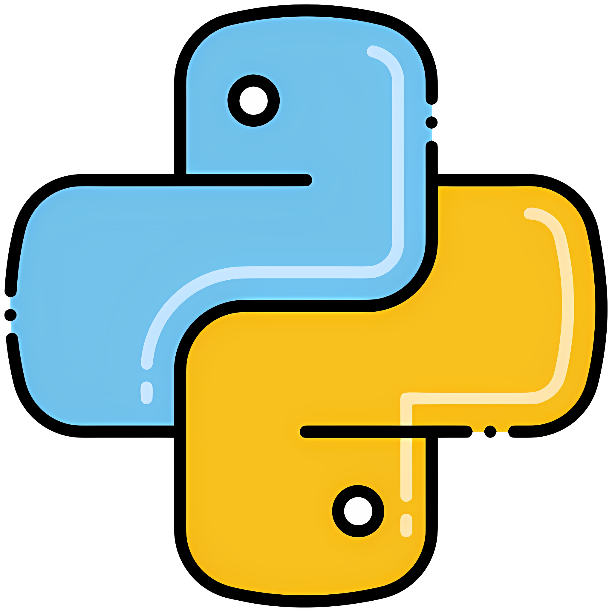

Hello ,I am Suraj
and I am Future

Skill Development

HTML Development (2022-2023)
I started learning HTML to build a foundation in web development. I began with basic tags, attributes, and elements, creating simple webpages. As I progressed, I worked with forms, tables, and lists, and continued to build projects to improve my skills. Now, I'm integrating CSS and JavaScript to enhance my webpages.

C Programming (2023-2024)
I started learning C to build a strong foundation in programming. I learned the basics like syntax, variables, and control structures, then advanced to functions, arrays, and pointers. Through practice and small projects, I gained proficiency in C, focusing on algorithms and system-level programming.

Python Programming(2024-2025)
I began learning Python to simplify programming tasks. Starting with basic syntax, variables, and loops, I moved on to functions, lists, and object-oriented programming. Through practice and real-world projects, I gained proficiency in Python, using it for data manipulation, automation, and web development.
Advancing Artificial Intelligence
I started exploring AI with machine learning and deep learning. Currently, I'm focused on integrating AI into agriculture to improve farming efficiency and sustainability.
.png)
Frontend Development
I learned frontend development using HTML, CSS, and JavaScript, and expanded to frameworks like React. I focus on building responsive, user-friendly interfaces through hands-on projects.

Video Editing
I started learning video editing with basic tools, focusing on cutting, transitions, and effects. As I progressed, I explored advanced techniques using software like Adobe Pro, enhancing my skills in storytelling and creating polished, professional videos.